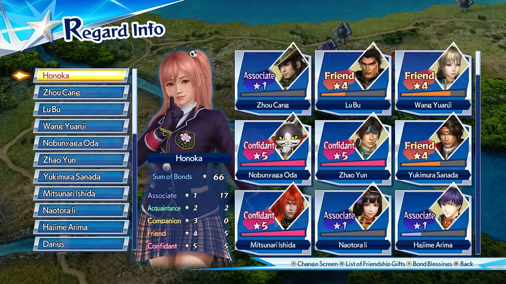
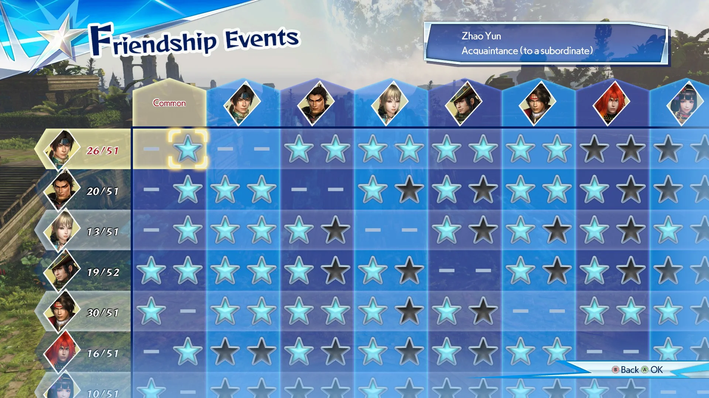
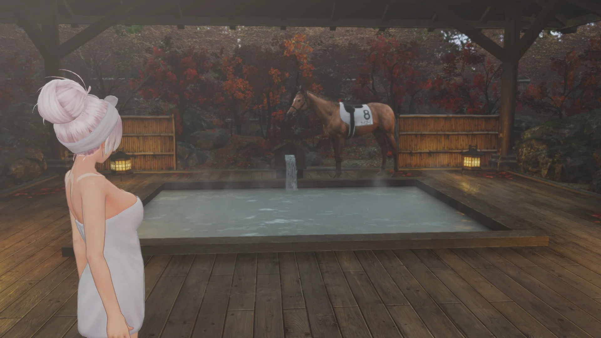
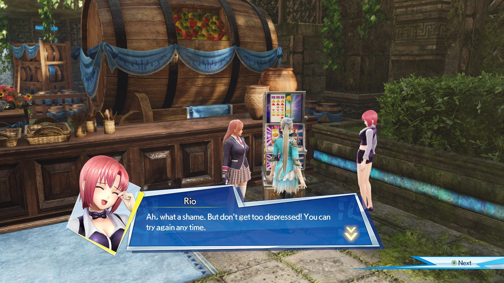
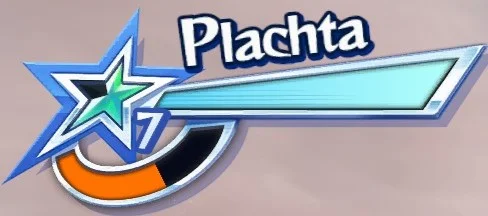
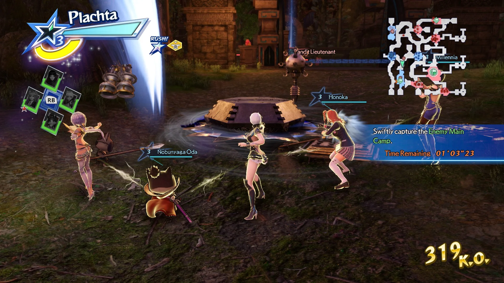
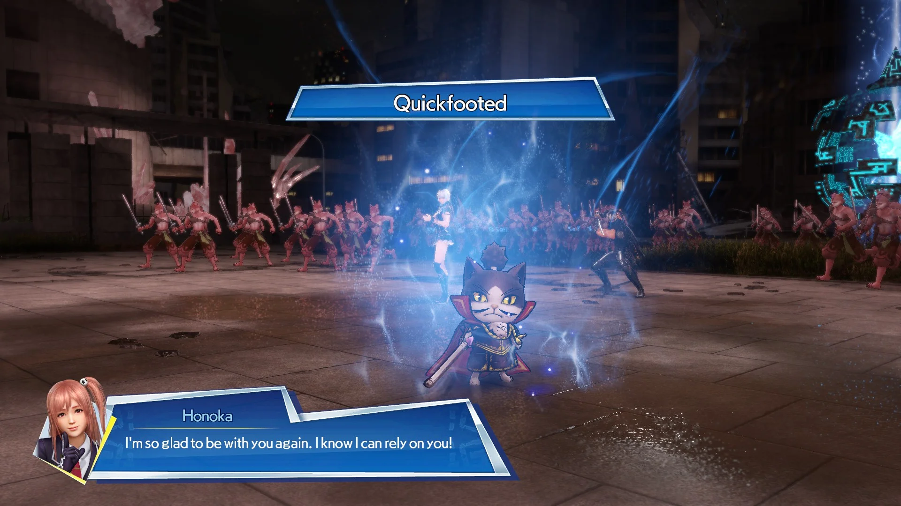

This has without a doubt been the most exhausting musou I've had to complete yet, probably the most exhausting game I've ever completed period.
Warriors All-Stars has taken around ~250 hours to complete (I'm writing this before fully being at 100% so that number could go even higher), a single true-ending playthrough takes around 8 hours, and obtaining all achievements can be done within 30 hours.
Why does 100% completing this game take nearly 10x the completion time for all achievements? Regard.

-Or to be more precise, Friendship Events/Hot Springs Events.

Regard on its own is largely an arbitrary stat-increasing number, something that I don't usually consider necessary for 100% completion of most games, but Warriors All-Stars has some extra gallery items locked behind reaching max regard between every character, including those Friendship and Hot Springs Events.
Regard is very simple to increase, use "Hero Skills" as often as possible, and perform well during "Musou Rush" (I'll explain later what those actually are).
Load up on 3 support characters who haven't reached rank 5 regard yet alongside either Honoka or Nobunyaga Oda (their Hero Skill recharge abilities make them a necessity), capture bases that drop Hero Skill resetting items, use Musou Rush whenever available and you're golden!
Like I said, very simple, mindless even, and that's the problem.
Imagine doing this basic rotation on every stage thousands of times for 200+ hours, it's mind-numbing and nothing changes, this is all Warriors All-Stars is for the entire completion process, it's miserable.
Regard increases slowly too, averaging 2 battles per set while playing at max efficiency, there are 30 playable characters, ignoring any RNG-related variance with regard experience gain, and the fact that a real player definitely won't be playing at max efficiency at all times, that's 57 battles to max everyone else with 1 character, 1,740 battles to max everyone.
At minimum over 1500 battles consisting of nothing but repeating the same boring, mind-melting rotation, Warriors All-Stars is purgatory.
All of that exclusively applies to going for 100%, regard is a complete non-factor for a normal player, hundreds of hours can be cut from the final playtime by just not being insane and playing a normal amount, so Warriors All-Stars is a better game normally right?
Kinda?
It's definitely less of a carousel of misery when playing like an average person, or even only going for console achievements/trophies, but I'd still consider it a below average musou, even by the standards of modern crossover musous.

This is one of Koei's lowest points, and it's a shame since this was intended to be a celebration of Omega Force's 20th anniversary, a development team with a fantastic track-record.
What's worse, all patches and character DLC plans were cancelled shortly after release, likely due to poor sales and reception, so Warriors All-Stars never even got the chance to improve and become the commemoration for its creators that it was meant to be.
To top this all off, announced around the same time, and intended as a 2nd half of the anniversary celebration was Dynasty Warriors 9, an infamous entry within that series; 2017 truly was the "Sonic the Hedgehog 15th Anniversary" of the musou genre...
It's unfortunate how this game turned out, it has some neat ideas, a fantastic core concept, one of the most interesting rosters of any musou crossover, but it was likely rushed through development in order to meet the anniversary deadline, and released severely anemic as a result (although that's entirely conjecture, Koei Tecmo is fairly quiet about the development process of their games).
Circumstances of release aside, as an actual experience Warriors All-Stars is a barren desert, don't be deceived by my ridiculously high playtime, this is not a substantial game by any means.
One game mode: Story Mode, that's all; in a vacuum that's not too bad, most older Dynasty Warriors entries only focused on 1 main campaign, but it was a very robust campaign with lots of side objectives and unlocks, most modern musous, especially of the crossover variety tend to focus more on side modes to fill out their content.
Warriors All-Stars does technically have side missions and weapon upgrades within that Story Mode, but does it really?
In many other musous higher tier weapons and equippable items are obtained through specific high-difficulty objectives, these are often the main reward for high level content, but instead Warriors All-Stars relegates this to randomized drops, mediocre request rewards, and direct purchases.
These random weapon drops (or "Hero Cards" as they're called in-game) exist solely to bloat your inventory until you're forced to toss them, the only cards that matter are obtained from character requests.
I don't think these are an awful reward, an A rank card with lots of effect slots is genuinely very useful, but these are the only rewards given out for everything, and constantly being showered with them definitely brings down the perceived value of high tier cards.
This means the only valuable rewards are obtained through completing requests, and the only high difficulty content are these requests, and I wouldn't exactly consider these the most engaging end-game challenges.
Every character (except the 3 original characters and Opoona) have 3 requests associated with them, ranging from a passive grind like obtaining 500 of a certain material, or an actual combat challenge like completing a stage without taking any damage.
Requests are like the equivalent of filler missions in other games, or sometimes even on the level of basic fetch quests, they're not too interesting but as supplementary challenges they would serve their purpose, but these aren't supplementary, requests are the only secondary content within Story Mode.
Okay so no fun extra side stuff, not great but assuming that main story campaign that's focused on so heavily is fantastic it could make up for everything else!
A single run of Story Mode can be completed in about an hour, more or less depending on the specific ending, and major story missions are near indistinguishable from the randomized stages scattered across the map, they're all dull as hell!
On paper, Story Mode looks fairly substantial, 15 endings, 30 playable characters, a ton of extra character-centric and crossover battles, who needs side content with such a huge main dish?
With the exception of the true ending, almost every ending takes less than 1 hour to reach (they don't even have unique routes BTW, which you end with is largely determined by a single choice and 1 exclusive stage), and those character-focused crossover battles? There are 10 and they don't even cover the entire roster.
No major side content, the mandatory story campaign is no better than randomized filler battles, and even the crossover content is mediocre and comes across as unfinished (in a game that sells itself as a massive crossover), does Warriors All-Stars do anything right?
Surprisingly, yes!

Warriors All-Stars has one of the strangest, most fascinating rosters of any musou out there, Warriors Orochi included.
Not only was this an anniversary title for Omega Force, but it was also used as a celebration for Koei Tecmo's franchises as a whole, thus we not only have expected musou inclusions like Lu Bu and Yukimura Sanada, but also Atelier characters, Ruby Party otome husbandos, someone originating from a Playstation 2 pachislot series, and even a cat version of Oda Nobunaga from a parody mobile game of Nobunaga's Ambition that was shut down in 2021.
Oh and Opoona, everybody loves Opoona!
It may not have the largest roster in the genre, but who it does have is absolute gold, and the best part: everyone's movesets are equally amazing!
Not everyone is perfect, but I think the development team did an incredible job of translating these characters from completely unrelated games into a musou context, no reused movesets, a relatively equal power balance between every unit, and every move list is filled with unique personality that perfectly fits the individual character it's associated with!
My personal favorite example of how much effort is clearly put into every playable character is William from Nioh; his original game is a relatively fast-paced Dark Souls-like game, as a character he's mostly just a typical sword-wielding samurai, but the most unique aspect of Nioh's gameplay comes from a mechanic called "Ki Pulse", it's effectively an instant stamina recovery by timing a button press perfectly after any attack chain.
In Warriors All-Stars at a glance William is a traditional sword-fighter, nothing special about him, and that makes sense that's pretty much what he was in Nioh too, but that one mechanic that made him stand out in Nioh, Ki Pulse, is adapted into a musou in almost the same way, but with a very different reward for correct timing.
Warriors All-Stars doesn't have a stamina meter, it wouldn't make much sense to have one in such a fast-paced game, so instead it achieves the same result, allowing the player to attack more aggressively in exchange for good timing, by greatly increasing attack speed for your next chain.
It's a perfect way to adapt William's most defining characteristic into a game built on completely different systems, and William is far from the only one with this treatment, a ton of love was put into every character to carry over their defining traits into a musou gameplay style.
Core combat mechanics beneath those fantastic character movesets are a bit more... mixed.
They're fun, equally interesting, and several unique major mechanics are entirely exclusive to Warriors All-Stars even nearly a decade of musou releases later, but there's a reason why most haven't returned, or are heavily iterated upon in future games.
Musou Rush, Alliance Strikes, Hero Skills, and Bravery are all core combat systems that are exclusive to this game; somewhat similar mechanics are present in other musous, but they're always altered to a degree that makes this specific version of them some of the strangest.
Bravery is the simplest of these 4, it's effectively the same as morale from earlier Dynasty Warriors titles, but in a more easily understandable presentation; whereas morale is a vague bar showing how well you're doing compared to the enemy army, Bravery is a 10-point system that increases your own strength as you progress through the stage.

Yourself, allies, and enemies all have their own Bravery rank, attacking an opponent with a higher rank than you will deal less damage, or if they're several ranks higher negate and counter your hits (although there are several easy ways to get around this).
Despite being very similar mechanics on paper, these differences mean that Bravery works more as a linear guide as to which path to take through a stage, you always want to be fighting in areas with a similar Bravery as you, while morale allows you more freedom in routing so long as you're constantly defeating generals and capturing bases.
I don't think Bravery would work well in other musous at all, it's restrictive, easily exploitable, and can't convey changes in the flow of battle since it never decreases, but for Warriors All-Stars I actually significantly prefer its simplicity.
It's a simple fast-paced game, the strategy element of the musou genre is completely missing in Warriors All-Stars, stages are extremely short, often hovering around the 3 minute range, it doesn't need the complexity of a constantly shifting bar of power that needs to be maintained through efficient prioritization and strategy, it needs a funny number that goes up when you smash the bad guy's skull against the wall!
Musou Rush is a strange variation on the temporary powered-up state available in most modern musous: higher attack power, invincibility, more gold/item drops from defeated enemies, but it has a few extra quirks that make it less practically useful, but arguably more fun to use than its counterparts.
Musou Rush is very flashy, it looks nice, during use the sky darkens, enemy weapons change into vibrant glowsticks, your support allies cheer you on in the foreground, and enemy spawn rates increase to hundreds on screen at all times, it's super satisfying to rack up thousands of K.O.s in the 30 seconds you're allowed!
Unfortunately it has some massive downsides holding it back; any K.O.s obtained during Musou Rush don't count toward your final K.O. total, meaning there's a 30 second period per use where you can't increase that very important number for your stage rating, and 30 seconds is often 1/4th of an entire stage length.
You're also incapable of using Hero Skills, and those are almost always more valuable than the buffs obtained in Musou Rush.
Plus that increased enemy spawn rate isn't entirely a positive, it's fun to mow down enemies yes, but it results in some major load-in issues for enemy generals that are required to take out; oftentimes new peon spawns will be prioritized over generals when loading in enemies, so even when directly next to the commander on the map, they won't physically exist until Musou Rush has ended.
With some minor tweaking Musou Rush could be the best form of this mechanic in the genre, but as is it's hard to justify using unless you just think it's neat, still useful in certain specific circumstances, but not the all-powerful enemy sweeping transformation is feels like it wants to be. Big disappointing.
Alliance Strikes and Hero Skills go hand-in-hand: both use the same meter, both involve support characters, however one is significantly more useful than the other.
Instead of allowing you to bring multiple playable characters with you in each mission, Warriors All-Stars lets you build a team of 1 playable leader, and 4 support members.

You can still temporarily swap to these secondary characters, and you can control up to 5 characters simultaneously through Alliance Strikes, but there are way too many drawbacks to this system.
I rarely use Alliance Strikes; in my over 200 hours of playtime I have used them maybe 20 times, so my apologies if I don't have quite as strong of a grasp on the details of this mechanic compared to the rest of Warriors All-Stars.
Alliance Strikes are a cool idea, they provide much more AoE potential than a single character has alone, are a slightly less restrictive power boost than Musou Rush, allowing you to increase your K.O. counter and use special attacks during, and most importantly playing as 5 characters together is fun!
The downsides start with damage output; it would make sense that 5 characters would do more damage than 1, but that would be incredibly unbalanced so instead damage is calculated differently.
I don't know the exact damage formula for Alliance Strikes, but from my own experience it seems to be divided by the number of characters involved, so when 5 characters are controlled each individual attack only outputs 20% of what it would normally.
So Alliance Strikes are bad for single target kills, but the added crowd-clearing potential is useful enough to make up for that right?
Arguably yes, in a musou crowd-control is always valuable, but Warriors All-Stars isn't as large scale as others in the genre; crowds are compact, usually contained within square base camps, and most characters have at least 1 massive AoE option than can clear an entire base in 1 string.
That's not universal, some characters do lack AoE coverage and for those Alliance Strikes are a nice consolation, but for a majority of the roster it's entirely unnecessary, at best wasted overkill, and at worst it's less effective than a solo character's strong-attacks.
Flawed but not a worthless feature on its own, unfortunately it shares a spotlight with Hero Skills, easily the most powerful tool in Warriors All-Stars's core combat.

These are why I don't use Alliance Strikes, not because it has no use cases, but because I have to choose between either 20 seconds of increased AoE from Alliance Strikes, or 30 seconds of invincibility, increased attack and movement speed, a crowd-controlling vacuum, and a chance to reset all cooldowns all at once with Hero Skills.
Everything that can be gained from Alliance Strikes can be gotten from Hero Skills plus much, much more, yet they share the same cooldown.
This creates a ridiculous power imbalance against Alliance Strikes, it's hard to justify ever using them because of how overpowered most Hero Skills are.
Each of the 4 support characters you bring into a stage has their own unique Hero Skill, most are passable but some are so amazing that they break this game in half!
Zhou Cang gives a speed increase that can be stacked on itself enough to speed across an entire map in seconds, Naotora Ii makes you immortal temporarily, Honoka has a 33% chance to reset cooldowns on all Hero Skills including her own, and there are so many more that are equally powerful.
Hero Skills are too good, fun for min-maxing and speedrunning sure, but some entirely sidestep major mechanics and challenges.
I don't think they're a bad inclusion, they're very fun, especially the most overpowered ones, but they draw attention away from the rest of combat, further contributing to the unfocused mess of Warriors All-Stars as a whole.
So much of Warriors All-Stars, from its structure to clashing combat mechanics, feels unpolished, incomplete, there are great things here but they never get the chance to fully shine through!
This really should have gotten a follow-up, or at least some content and balancing patches, it's not an unsalvageable game, but unfortunately sales numbers were abysmal and despite being intended as a Warriors Orochi successor, Koei Tecmo have since returned to the series it was meant to replace.
It's hard for me to fully hate Warriors All-Stars, it's one of the worst experiences I've ever had playing a video game, but most of that was self-inflicted, it's not that bad, even if it's not that good either...
{kind=link}